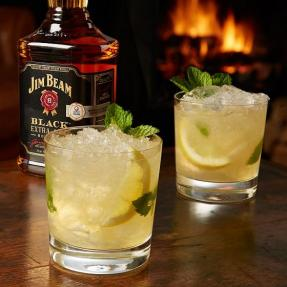

Mojeto Beam

Mojito Beam
Ingredientes
- 50ml de Jim Beam White
- 30ml de suco fresco de limão taiti
- 30ml de Xarope de mel com especiarias
- 100ml de água com gás
- 10uni de folhas de hortelã
- copo long drink
Modo de Preparo
- Adicione no copo as folhas de hortelã, o suco de limão e Xarope de Mel com especirias
- Em seguida Jim Beam White
- Complete com água com gás
- Mexa tudo
- Finalize com gelo, rodelas de limão e buquê de hortelã
Informações adicionais
Você poderá servir esse drink Mojito Beam em suas festas naqueles dias mais quentes, porque se trata de uma bebida muito resfrescante ideal para esse tipo de ocasião.